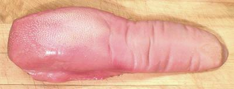

Beef tongue is a favorite for cold sliced appetizers and also appears warm in various sauces and in Japan, grilled. You're not likely to find tongues in the big chain supermarkets but markets serving ethnic populations just about always have them, along with lamb and pig tongues. The photo specimen weighed 3.8 pounds and was 14 inches long. Edible yield was 64%, weight lost being in skin, fat and liquid.
More on Beef Innards
 Veal tongue differs from beef tongue in being less than 1/2 the weight, more tender and with a milder flavor, and is from a dairy breed rather than a meat bread. You needn't feel guilty for eating calf - blame it on vegetarians eating all that cheese and yoghurt (see Veal - Controversy). The photo specimen weighted 1.55 pounds and was 11-1/2 inches long. It was fully cooked in 1-1/2 hours .
More on Beef Innards
Rinse the tongue first in cold water, then in hot. Put it in a pot with water to cover well (it will swell some). Add 1T salt and an 8-oz onion quartered. When done, drain the tongue thoroughly and let it cool just enough to handle it - then peel off the skin. This is much easier hot than cold. Then the tongue can be chilled thoroughly and sliced - it's much easier to slice thoroughly cold even if you intend to heat it up again. The broth can be defatted and used in other recipes.
Beef tongue is also sometimes oven roasted. To prepare for this use scald it in boiling water sufficiently for the skin to be peeled off easily, then treat as any other beef roast of similar weight.
In Japan beef tongue is sliced very thin and grilled, a dish called gyutan invented in 1948 to use beef parts discarded by US occupation forces.
Some older and European recipes say to remove the bones at the root of the tongue. This is not necessary in the United States, due to USDA regulations aimed at preventing BSE (Bovine Spongiform Encephalitis - mad cow disease).
Note in the beef tongue photo the skin has been removed from the root end in compliance with USDA regulations to remove all traces of the tonsils which are considered a possible carrier of BSE. This specimen is a bit severe and most don't have that much skin removed. The veal tongue is not so cut and skinned because cows that young are not considered a risk. Harvesting tongues from cows over 30 months old is not allowed by the USDA.
ab_tonguez 090229 - www.clovegarden.com